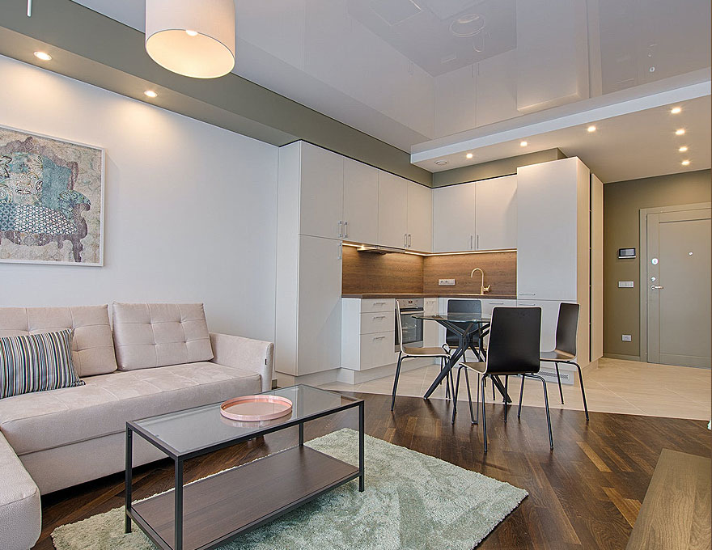

<section class="text-copy">
  <div class="container">
    <!-- Title -->
    <h2 class="text-copy__title">Ремонт квартир у Львові — якісно з гарантією і адекватними цінами</h2>

    <div class="text-copy__inner">
      <p class="text-copy__paragraph">Ремонт квартири - це процес оновлення інтер'єру, дизайну, заміна на нову і якісну
        обробку. Ремонт квартир Львів вимагає ретельної підготовки, підбору будівельних і оздоблювальних матеріалів,
        складання кошторису.
      </p>

      <h3 class="text-copy__list-title">Ремонт під ключ Львів буває декількох видів:</h3>
      <ul class="text-copy__list">
        <li>косметичний</li>
        <li>капітальний</li>
        <li>дизайнерський елітний ремонт.</li>
      </ul>
      <p class="text-copy__paragraph">Косметичний ремонт - найлегший і простий. . Не вимагає великих матеріальних і
        фізичних витрат. Мінімальне використання оздоблювальних матеріалів. Поправити плінтус, пофарбувати стіну,
        перекласти паркет і так далі.</p>

      <p class="text-copy__paragraph">Косметичний ремонт - найлегший і простий. . Не вимагає великих матеріальних і
        фізичних витрат. Мінімальне використання оздоблювальних матеріалів. Поправити плінтус, пофарбувати стіну,
        перекласти паркет і так далі.</p>

      <p class="text-copy__paragraph">
        Капітальний ремонт квартир під ключ Львів вимагає значних витрат. Змінюється вся обробка. Проводиться
        демонтаж
        старих покриттів і основ. Вимагає вирівнювання поверхонь
      </p>

      <a class="text-copy__btn button-link">Читати далі</a>
    </div>

    <!-- Image -->
    <div class="text-copy__image">
      
    </div>

  </div>
</section>